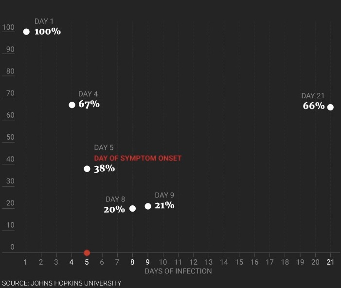

THE GREAT MIGRATION AND THE AMERICAN DREAM
Between 1803 and 1860 more than 550 thousand whites migrated to New Orleans from Germany, Ireland and Northern States within the US. The American dream lured in migrants to the Mississippi valley. Domestic slave trade flourished. So did sugar and cotton plantations.
Migration to New Orleans (1803-1860)
PROGRESS AND PANDEMIC
With progress came the pandemic.
The burgeoning population turned into a death trap in cities with little or no public health infrastructure. The contagion flourished in high population density neighbourhoods. Up to 50 percent of newcomers died violent deaths from yellow fever- oozing blood from nose and mouth due to multiple internal haemorrhages.
In multiple waves, this contagion would ravage these tropical and sub-tropical plains for the next 100 years killing about eight percent of the region’s urban population, and as many as 30 percent of recent migrants. In 1853, the year of New Orleans’ worst epidemic, about one-tenth of the city’s population succumbed to the Yellow Fever.

This tableau shows horrific scenes from the epidemic, when yellow fever engulfed not just New Orleans but the entire region—stretching as far north as Memphis, Tennessee. The central image shows Canal Street, normally the city’s busiest thoroughfare, desolate except for hearses. The image above it shows two homeless men ailing on a park bench as a wealthy man walks briskly away. Many of these scenes show that yellow fever impacted people differently according to ethnicity, gender, race, and class. “The Great Yellow Fever Scourge. — Incidents of Its Horrors in the Most Fatal Districts of the Southern States,” wood engraving from Frank Leslie’s Illustrated Newspaper, September 28, 1878.
A PERVERSE CAPITALISM
Co-mingled with racism and slavery, the Yellow Fever engendered a perverse form of capitalism in Deep South. This new social order celebrated those who survived the disease and thus acquired long term immunity from the virus.
Survival from the Yellow fever was a certificate of greater life expectancy. Natural inoculation catapulted a section of white population to the higher echelons of social and economic hierarchy. Banks offered them loans.
Their businesses flourished. “Immunocapital” soon became the most the most sought-after currency.

The scene shows both capitalist energy and climate-induced lethargy: while some of the men grade cotton and keep books, others read the Picayune and languish in the subtropical heat. This was the first painting Degas sold to a museum. Edgar Degas, A Cotton Office in New Orleans, 1873.
PERILS OF IMMUNITY PASSPORTS FOR COVID-19
WHO has warned against the perils of adopting any such measures in an attempt to reboot the economy in haste.
At this point in the pandemic, there is not enough evidence about the effectiveness of antibody-mediated immunity to guarantee the accuracy of an “immunity passport” or “risk-free certificate.” People who assume that they are immune to a second infection because they have received a positive test result may ignore public health advice. The use of such certificates may therefore increase the risks of continued transmission.
WHO: "Immunity passports" in the context of COVID-19; April 24, 2020
Firstly, there is little empirical evidence to confirm people who get infected are immune to Covid-19. South Korea has reported multiple cases of re-infection.
Studies show up to 20% of the Covid-19 patients have small or weak anti-bodies. There is little research on how long the acquired immunity to the virus may last.
Secondly, most sensitive pathological investigations can give negative false tests. So there is no guarantee that a person who has tested negative has not been exposed to the virus. (RT PCR Tests in China from lower respiratory organs have shown 75% accuracy)
Variation in False-Negative Rate of RT-PCR–Based SARS-CoV-2 Tests by Time Since Exposure
PROBABILITY OF A FALSE-NEGATIVE RESULT IN AN INFECTED PERSON

And finally, immunity passport may usher in a system which would reward and promote those who survive the infection. As in southern provinces in the US in 17th century, this may sow seeds of a perverse form of capitalism which would not only pull a section of the society to the bottom of the social and economic order, it might even nudge the poor and displaced to seek immunity through exposure to the disease.
From the paper:
NECROPOLIS: YELLOW FEVER, IMMUNITY, AND CAPITALISM IN THE DEEP SOUTH, 1800-1860 , Kathryn Meyer McAllister Olivarius History Wolfson College University of Oxford
Yellow fever proved highly lethal in Gibraltar, Cádiz, and the Caribbean. Arriving on mainland North America as early as 1699, it periodically struck with staggering violence. It killed about 5,000 people in Philadelphia in 1793 (one-tenth of the city’s population; a further 17,000 fled the city), 5,000 more in 1798 in both Boston and New York, and about 1,000 in Baltimore in 1800.
The first yellow fever epidemic on the Gulf Coast occurred in 1796, coinciding with Louisiana’s first successful sugar harvest.
An 1803 census suggests New Orleans inherited by the United States counted a population of 8,050 residents, inclusive of all races and 700 people “not domiciled.”
New Orleans’ population doubled in size in 1809 with the influx of asylum-seekers from St. Domingue to 18,000, and continued to grow, swelling from 46,000 in 1830 to 102,000 in 1840 through European, American, and forced black migration.
In 1860, the city’s population surpassed 168,000, mostly through the addition of tens of thousands of Irish people escaping famine and Germans fleeing the upheaval of 1848.
Mobile, Alabama, a port city about 140 miles to the west of New Orleans, suffered an especially fatal yellow fever season in 1819. 274 people died out of 1,300 inhabitants, amounting to 21 percent of the population.
Historian K. David Patterson estimated that between 1817 and 1905, yellow fever killed 40,171 people in New Orleans – ten times more than the next most-afflicted city, Charleston.
My own estimate (author of the paper) is that yellow fever killed at least 150,000 Orleanians between 1803 and the Civil War, and probably many more.
In 1833, Maria Inskeep stood at her window in New Orleans and counted 10 funeral processions in one hour.
The Charity Hospital, the primary repository for New Orleans’ poor and indigent, admitted at least 122,317 patients during the 1830s and 40s, the majority during the fever months.